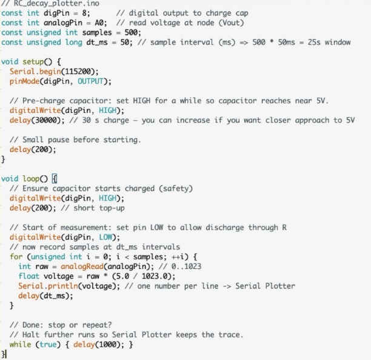

Electrical Systems for ME · Fall 2025
RC Transient
Data Logger
An Arduino measurement script used to charge, discharge, sample, and plot a capacitor transient, then investigate disagreement with the ideal model.
- 500Samples
- 50 msSample interval
- 25 sCapture window
- 10 sNominal time constant

Drive the experiment, then capture the response.
The Arduino charged the capacitor from a digital output, released it through the resistor, and sampled the node voltage through analog input A0.
The sketch converted 10-bit ADC counts to volts and streamed 500 samples at 50 ms intervals to the Serial Plotter. A 115,200-baud link supported the full 25-second capture window.
Simple code, visible system behavior.
The measurement loop creates a repeatable timing sequence and produces a trace that can be compared directly with the first-order RC model.

Starting near 5 V, the ideal model predicts roughly 0.41 V after 25 seconds.
The mismatch is the useful result.
The measured trace approached 0 V by the end of the capture window, faster than the nominal 100-microfarad model predicted.
The submitted analysis identifies component tolerance or a lower actual capacitance as a likely cause. The next step is to measure the component and fit the observed time constant rather than force the data to match the nominal label.
Model, measurement, discrepancy.
| Check | Finding | Status |
|---|---|---|
| Acquisition timing | 500 samples at 50 ms produce the intended 25-second window. | Implemented |
| Curve shape | Serial Plotter trace shows the expected exponential-decay form. | Observed |
| Endpoint | Measured voltage fell faster than the nominal RC prediction. | Anomaly |
| Root cause | Capacitance tolerance was proposed but not verified with a meter or fitted parameter. | Open |